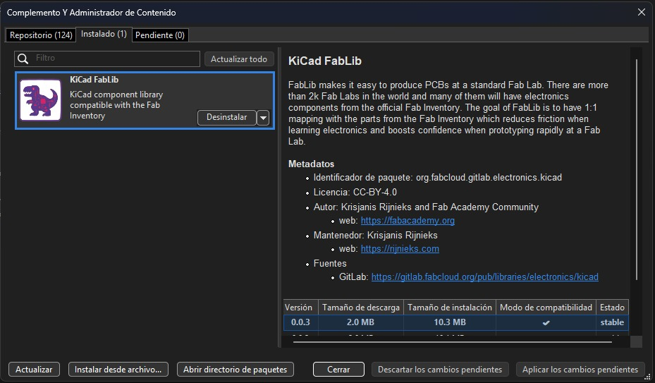
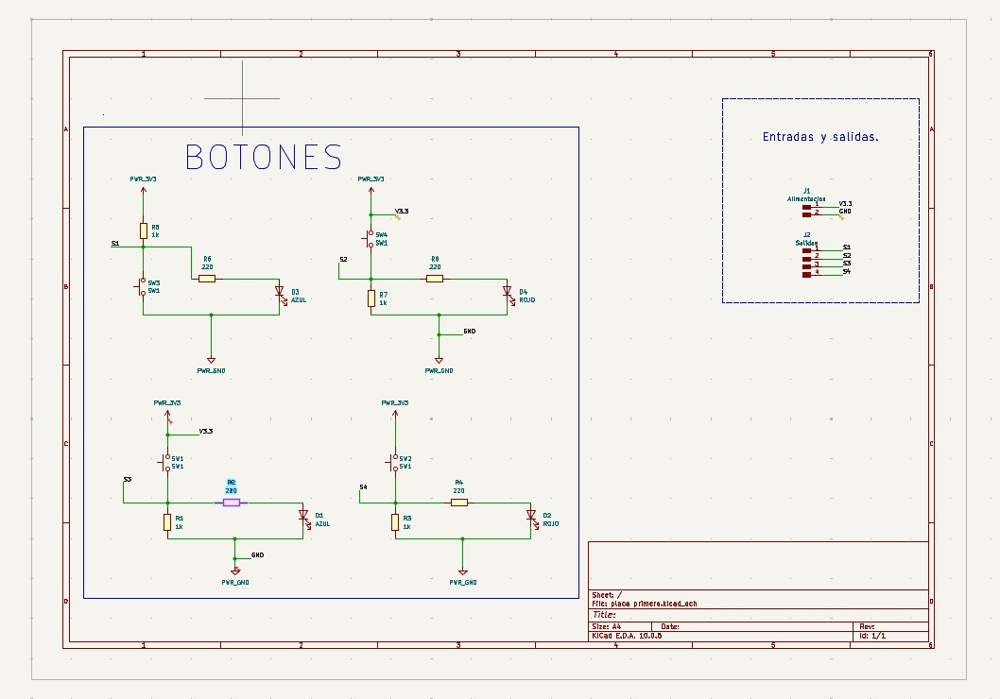
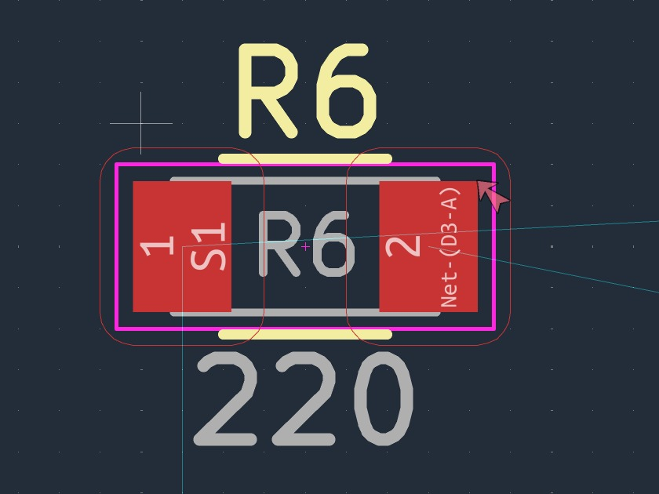
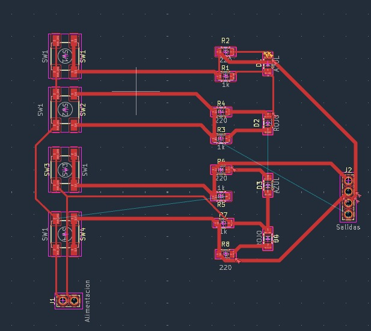
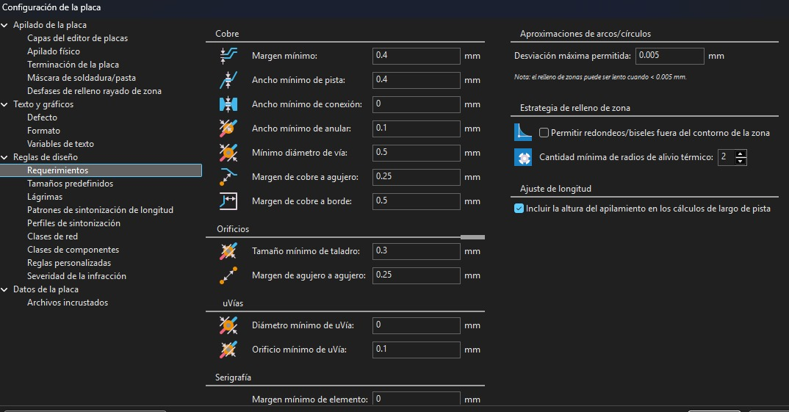

Integrantes del equipo
1. Producción electrónica
La producción electrónica es el proceso de diseñar, fabricar, ensamblar y verificar dispositivos y circuitos electrónicos. Su objetivo es transformar un diseño en un producto funcional que cumpla con los requisitos de calidad y funcionamiento.
En una placa de circuito impreso (PCB), este proceso incluye elaborar el diagrama del circuito, seleccionar los componentes, diseñar las pistas y fabricar la placa. Después, se colocan y sueldan los componentes y se realizan pruebas para comprobar que las conexiones y el circuito funcionen correctamente.
A lo largo de esta materia documentaremos la creación de nuestra placa, desde el diseño inicial hasta su ensamblaje y pruebas, mostrando los avances y las dificultades de cada etapa.
2. Programa KiCad
El programa que estamos utilizando para desarrollar nuestra placa de circuito impreso es KiCad. Con este software podemos elaborar el diagrama esquemático, seleccionar las huellas de los componentes y diseñar la distribución de nuestra placa.
Para comenzar, descargamos e instalamos KiCad en nuestro equipo. Este es el primer paso para contar con las herramientas necesarias y empezar a trabajar en el proyecto.

Desde la interfaz de KiCad podemos crear y organizar nuestro proyecto, abrir el editor de esquemáticos y acceder al editor de placas de circuito impreso. Estas herramientas nos permiten pasar de las conexiones eléctricas del circuito a su distribución física en la placa.

Durante el diseño podemos definir las dimensiones de la placa, el ancho de las pistas, la separación entre conexiones y el tamaño de las perforaciones. Ajustaremos estos parámetros conforme a las capacidades de la máquina CNC ________, ya que con este equipo vamos a fabricar nuestra placa.
KiCad también cuenta con herramientas de revisión que ayudan a identificar posibles errores de conexión y verificar las reglas de diseño. Además, permite visualizar la placa en 3D para revisar la distribución de los componentes antes de pasar a la fabricación.
3. Elaboración del esquemático
Iniciamos armando el circuito en el editor de esquemáticos de KiCad. Colocamos algunas resistencias e interruptores (switches), representados mediante sus símbolos eléctricos, y realizamos las conexiones necesarias entre los componentes para armar nuestro circuito.

El esquemático es importante porque sirve como guía para diseñar la placa de circuito impreso. Por esta razón lo elaboramos primero: nos permite identificar los componentes, entender cómo se conectan y revisar las conexiones antes de trabajar en la distribución física de la placa.
Después asignamos a cada componente su huella, que representa el espacio y los puntos de conexión que ocupará en la PCB. La huella debe coincidir con las dimensiones y la posición de las terminales del componente que utilizaremos.

Una vez definidos el esquemático y las huellas, podemos continuar en el editor de PCB. Ahí acomodamos los componentes y trazamos las pistas que los conectan, buscando una distribución ordenada que facilite la fabricación y la soldadura.

Antes de fabricar la placa, revisaremos que las conexiones correspondan al esquemático y que el diseño cumpla con los parámetros establecidos para la CNC. Finalmente, exportaremos los archivos necesarios para preparar el mecanizado en el software correspondiente.
4. Parámetros
Para continuar con el diseño de nuestra placa, ajustamos el ancho de las pistas, es decir, las líneas de cobre que conectan los componentes. Establecimos un ancho mínimo de 0.4 mm y un máximo de 0.8 mm para nuestro diseño.
Con estos ajustes buscamos facilitar el trazado y reducir posibles dificultades durante la fabricación. También revisamos la separación entre pistas para evitar contactos no deseados y mantener las conexiones organizadas.

Antes de fabricar la placa, verificaremos que estos valores sean compatibles con la herramienta de la CNC y con los requisitos eléctricos del circuito.